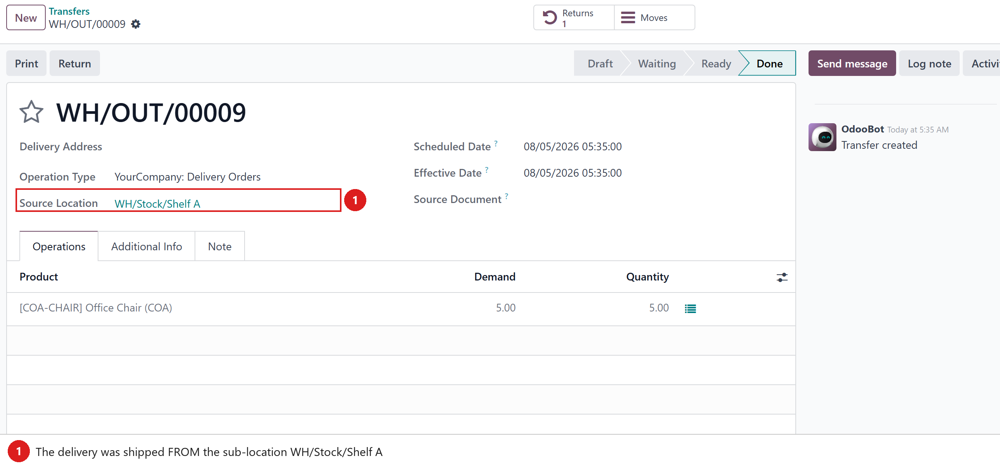
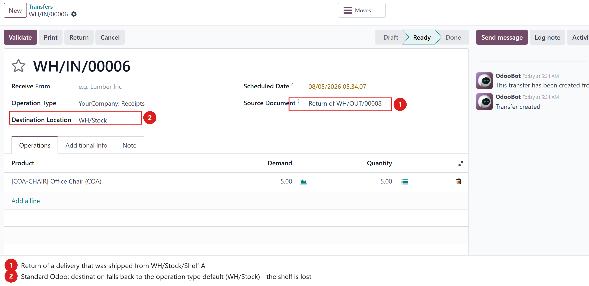
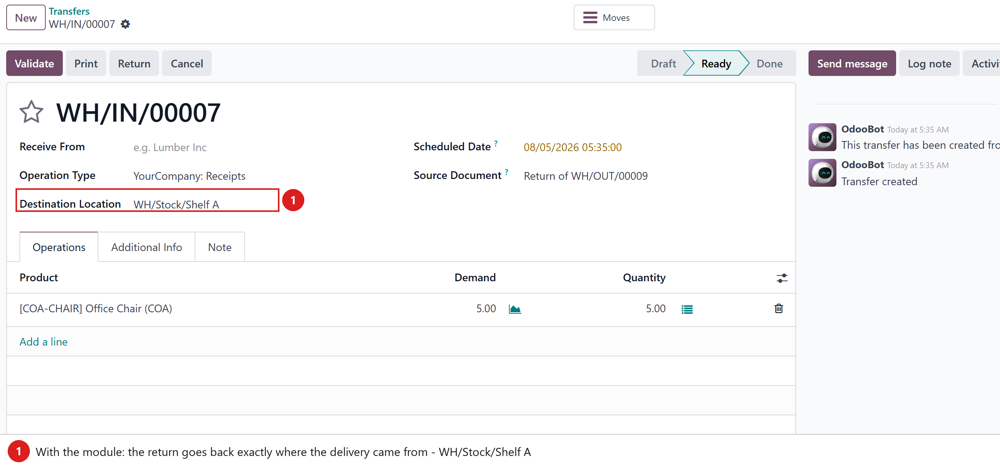

Returned goods go back exactly where they came from — the source location of the original delivery, not the operation type’s generic default.
When you use sub-locations (shelves, zones, branch stores…), a delivery is picked from a
specific place — say WH/Stock/Shelf A. But when the customer sends the goods
back, the standard return wizard sends them to the return operation type’s default
destination (typically the warehouse root WH/Stock, or a configured returns area).
The quantity ends up in the wrong place, on-hand per shelf is off, and someone has to make an
extra internal transfer to fix it.
This module makes every return created from the Return wizard go back to the source location of the original transfer — on the return picking and on every stock move inside it, so the goods physically land on the right shelf.
The delivery below was picked from WH/Stock/Shelf A and sent to the customer.

Returning that delivery with the standard wizard creates a receipt whose destination is the
operation type’s default — plain WH/Stock. Nobody remembers the goods belong
on Shelf A.

Same return, module installed: the destination is WH/Stock/Shelf A — the exact
source of the original delivery. Validate, and the on-hand quantity is correct per shelf,
no manual transfer needed.

stock.return.picking):
_prepare_picking_default_values() forces the return picking’s destination to the
original picking’s source location._prepare_move_default_values() there — the override is inert on 18/19, where the
moves already follow the picking’s destination.
Tested on Odoo 17, 18 and 19 (Community and Enterprise).
Depends only on the standard stock module.